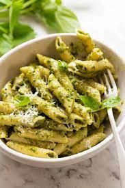

Spinach Pesto Pasta

Description
Who doesn't love pasta, cheese, and sauce? The italians know what's up when it comes to food. Enjoy this pasta dish with a savory basil pesto sauce and plenty of cheesy goodness to satiate your hungriest needs.
Ingredients
- penne or angel hair pasta
- basil pesto sauce (ready made)
- parmesan cheese
- spinach
- pine nuts
Steps
- Cook the pasta
- Sautee the onions in olive oil
- Add the spinach until it lightly wilts
- drain the cooked pasta
- Add the ready-made pesto sauce
- Add the cooked onions and spinach
- add grated parmesan cheese liberally
- Enjoy!